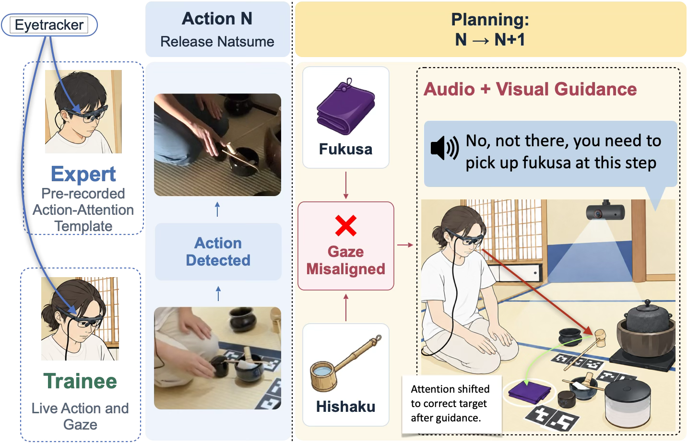

CueOnGaze
Paper in submission
A gaze-guided learning system that compares a trainee’s actions and visual attention with an expert’s recorded action–attention template. When gaze is misaligned with the next task, the system provides audio and visual cues to guide attention to the relevant object.
Mentored by Jun Rekimoto.